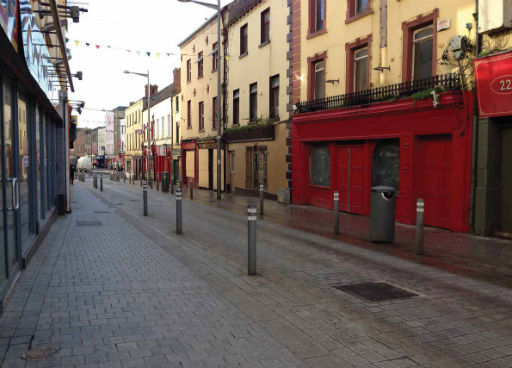

The Street

Using the testimony of independent shopkeepers, the company who brought you Ship Street Revisited guide you through the memories and dramas of this once bustling shopping district. Walk with us through this narrow street and these shops and lanes will reveal a vibrant humanity. For five nights only, Narrow West Street plays host to a community cast of fifty who intertwine the real, the imagined and the dreams of Drogheda's past, present and future. Behind every door in every street there's a story to be told; Upstate Theatre Project continues to unlock the stories of the everyday in Drogheda. LIMITED AUDIENCE CAPACITY, EARLY BOOKING IS ADVISED
The Independents - A photographic exhibition by Shane Cowley, the inspiration behind The Street will be represented at Barlow House for the festival
Thursday 1 May - Monday 5 May
Venue: Meet at Barlow House, Narrow West St
Times: 6:30 & 8:30pm
Tickets: 12 in advance, 14 on day